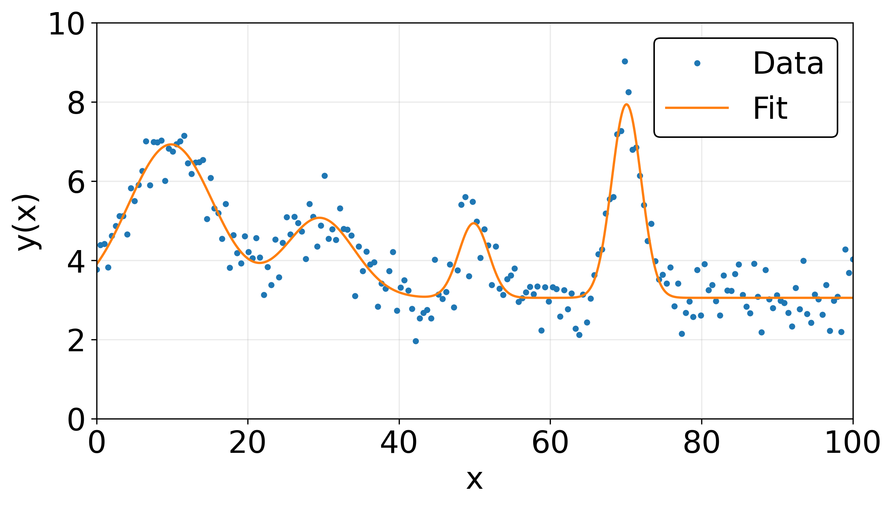

Fitting Multiple Gaussians in Python
It's not uncommon in data anaylsis to want to fit the data to an arbitrary number of the same function. This could, for example, be fitting data to multiple Gaussians.
import numpy as np
import matplotlib.pyplot as plt
from scipy.optimize import curve_fit
def gaussian(x, *params):
f = np.zeros_like(x)
for i in range(0, len(params), 4):
amp = params[i]
cen = params[i+1]
wid = params[i+2]
offset = params[i+3]
f = f + amp*np.exp(-0.5*((x-cen)/wid)**2) + offset
return f
## generate fake data
N = 200
x = np.linspace(0, 100, N)
dataparams = [4, 10, 6, 1,
2, 30, 5, 2,
1.7, 50, 2, 0,
5, 70, 2, 0]
y = gaussian(x, *dataparams) + np.random.normal(0,1,N)/2
## fit data to multiple gaussians
params, errs = curve_fit(gaussian, x, y, p0=dataparams)
xfit = np.linspace(x[0], x[-1], 1000)
plt.subplots(dpi=300, figsize=(8.5,5))
plt.plot(x,y, '.')
plt.plot(xfit, gaussian(xfit, *params))
plt.xlabel("x")
plt.ylabel("y(x)")
plt.legend(["Data", "Fit"], edgecolor='k', framealpha=1)
plt.grid(alpha=0.25)
plt.ylim(0,10)
plt.xlim(0,x[-1])
plt.tight_layout()
plt.show()
The output of the code is shown below, where I've generated some fake data that is fit to the sum of four Gaussian curves. I cheated a little bit in just using the parameters used to generate the data as the initial guess for the fit, so in practice that aspect is more of an art.
